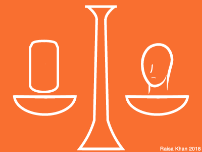

Did you know?

In the United States...
Energy drink manufacturers avoid regulations on caffeine content by designating their drinks as 'natural dietary supplements', exceeding the 71mg caffeine limit imposed on soft drinks.
There are no requirements for testing, warning labels, nor restriction against sale to or consumption by minors.
Even over-the-counter caffeine stimulants must list a minimum age for consumption, potential adverse side effects, recommended dose, and caution notices—energy drink manufacturers in the U.S. are not required to include similar messages.
Legislation has been considered to require supplements (and therefore energy drinks) be registered with the FDA and allow recall of supplements that may be unsafe, but the bill has failed to pass.
As it stands, energy drink contents lack FDA approval.
Internationally...
After trace amounts of coccaine were found in Red Bull cola, some states in Germany prohibited sale of the drink.
In 2008, the European Commission orderd France to lift its ban on Red Bull drinks in their original formulation due to the ambiguity surrounding health effects of taurine.
A ban on the sale of energy drinks to children under the age of 14 is currently being considered by UK Parliament.
Sources
- http://pediatrics.aappublications.org/content/pediatrics/127/3/511.full.pdf"
- https://www.fda.gov/ForConsumers/ConsumerUpdates/ucm050803.htm
- https://www.gov.uk/government/consultations/ending-the-sale-of-energy-drinks-to-children
- https://www.reuters.com/article/us-france-redbull/france-ends-12-year-ban-on-energy-drink-red-bull-idUSL1576964720080715